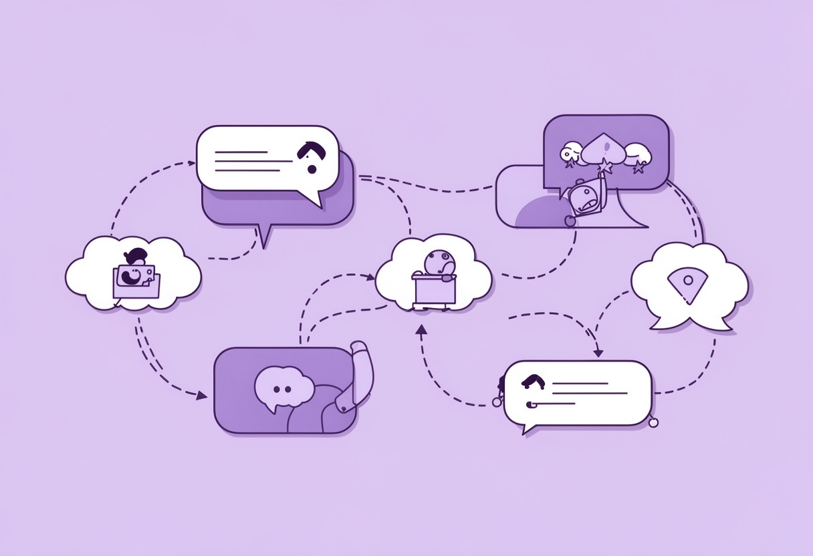

AI对话新手第一课
AI对话新手第一课 很多刚接触大模型的朋友，第一次跟 AI 聊天时，往往带着一种“魔法”的期待，但结果通常是失望的。你问它“帮我写个方案”，它回你一段车轱辘话；你让它“画只猫”，它给你画出一只长着人脸的诡异生物。这时候，…
提示词入门 2026-09-17 · 约5分钟
AI对话新手第一课 很多刚接触大模型的朋友，第一次跟 AI 聊天时，往往带着一种“魔法”的期待，但结果通常是失望的。你问它“帮我写个方案”，它回你一段车轱辘话；你让它“画只猫”，它给你画出一只长着人脸的诡异生物。这时候，…
提示词入门 2026-09-17 · 约5分钟

提示词工程入门10招 很多人刚开始接触AI时，最大的感受往往是“玄学”。明明同一个模型，为什么别人生成的文案能直接用，自己写的却全是废话？其实，提示词工程（Prompt Engineering）并没有那么高深，它更像是一…
对话技巧 2026-09-17 · 约5分钟

让AI扮演专家的提问法 很多刚接触大语言模型的朋友，往往有一个误区：他们把AI当成一个“百晓生”，扔过去一个问题，期待它直接给出一个完美无缺的答案。结果发现，AI给出的回答虽然面面俱到，但往往泛泛而谈，缺乏深度，甚至有时…
平台对比 2026-09-16 · 约5分钟

AI多轮对话的上下文技巧 很多刚接触大语言模型的朋友，往往把AI当成一个“搜索引擎”或者“单轮问答机”来用。问一个问题，得到回答，然后关掉页面，下次重新开始。但如果你真的想挖掘出AI的潜力，尤其是在处理复杂任务时，你会发…
提示词入门 2026-09-16 · 约5分钟
AI回答不靠谱?是你没问对 最近后台收到不少读者的私信，大家都在吐槽同一个问题：“为什么我让AI写周报，它写得像流水账？”或者“让它写代码，报错一堆，还要我手动去查文档。”甚至有人抱怨：“这AI是不是有点笨，根本听不懂人…
对话技巧 2026-09-16 · 约5分钟

免费AI对话平台对比 最近后台收到不少私信，问的最多的问题就是：“现在AI工具这么多，哪个能白嫖？哪个最稳？哪个适合我这种纯小白？”说实话，作为一名在AI圈摸爬滚打了两年的“老鸟”，我最初也是从一个平台跳到另一个平台，甚…
平台对比 2026-09-15 · 约5分钟